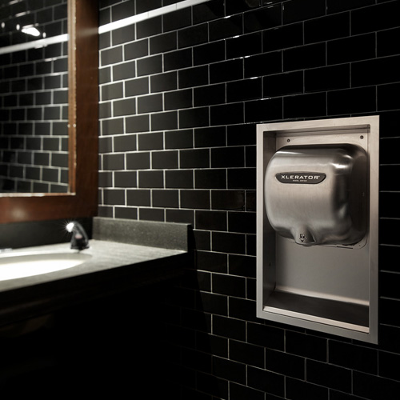

Work Experience #7
Research & Development Engineer at Excel Dryer, Inc

Overview:
I started working as an R&D Engineer at Excel Dryer, Inc, located in East Longmeadow, Massachusetts. This company manufactures the finest quality
hand dryer and hairdryer for commercial places. The products enable 95% cost savings and 70% carbon footprint reduction by getting rid of paper
towels and switching to our high-speed, energy-efficient hand dryers.
My reason to work at Excel Dryer is to support the development of highly efficient products which use less energy, generate cost savings,
and enhance hygienic outcome at numerous facilities. I completely support the company’s vision to provide high-quality drying solutions and
set the standard for restroom sustainability and efficiency. I am a part of a small team which allows me to learn all ins & outs of the company and its products. From involvement in providing technical
specification to the sales team to helping production people to solve everyday challenges, it’s been a great learning curve for me. I have
been managing various projects which involve external and internal resources. And having the ability to apply analytical skills in the mechanical
domain along with static, dynamic, kinematic is the best part of this role. I am playing a pivotal role along with my team to design and develop
next-generation products equipped with high tech features which are rare in this product line. Here at Excel Dryer, I wish to make products which
can change the definition of public hygiene by verification and validation all the electromechanical components developed in-house. I’d also like
to contribute to the company to establish more production facilities in the States and expand its business across the globe.
Achievements :
> Designed and prototyped the best-in-class water-proof optics casing for the dryers to avoid damages and faults due to corrosion. The design was so perfect that it can stay submerged for more than 30 min without water getting inside the casing.
> Developed a multi-purpose fixture for performing electrical & Hi-Pot testing for a new product line in a given timeframe. The design is so unique that it could be used for all the other products in the similar segment. It all resulted in less setup time for mass production.
> Initiated the environmental testing for all the components to evaluate the performance at varied temperature and humidity. Due to this, the company would be able to export products to different countries with severe environmental conditions.
> Performing all types of inhouse testing independently to ensure that the products are safe, efficient, and built as per the quality standards.
> Collaborated as an essential employee in the rapid production of the new product to fight COVID pandemic. It was a fantastic experience on how to modify the existing components to meet demands and provide support to healthcare personals. From getting new parts, deciding packing, planning schedules, and complying the product with safety and quality certification within a month was very challenging and demanding.
Roles & Responsibilities:
- Performing robust CAD modelling and simulation for all the new fixtures and in-house tools to help production people to make parts in a fast-paced environment. Checking DFA & DFM principles and integrating electrical components for validating the conceptual design, moving parts, mechanisms, and assemblies is one of the many tasks.
> Developing in-housing testing rigs for temperature, pressure, flow rate, velocity, RPM and electrical data to check the quality and performance of the products. Implementing DOE to keep track of all the testing procedures for traceability and consistency. Setting new testing protocols based on the requirements.
> Collaborating in research & development of new products with cross-functional teams like quality, production, planning and sales.
> Redesigning & modifying existing models based on their performance and evaluation.
> Perform troubleshooting of tools and devices used in production lines and providing full technical support by improving and refurbishing components.
> Interacting with vendors and suppliers to develop high-quality parts for mass production. From developing tools/ fixture for mass production to injection moulding, 3D printed parts for prototyping; our team manages everything.
> Assisting in Electromagnetic Compatibility devices and Low Voltage Devices certification for different countries, performing modifications to certify the products. Focusing on UL, ULc, CE, GMark, etc.
> Designing different components and promoting rapid prototyping using in-house 3D printing and conventional machining facilities like bed mill, lathe, drill press, etc. Having a great experience in operating machines and learning about different types of machine shop tools, CNC code and materials.
> getting high exposure to product’s programming languages is very helpful to understand the behaviour of the products. My manager gives me ample opportunity to try and tweak the code for adding new features. Once testes and approved, we bring it to mass production.
> Responsible for the complete documentation of all the existing and new products.
I’ll keep on adding new projects every month. So, stay tuned for more updates.
